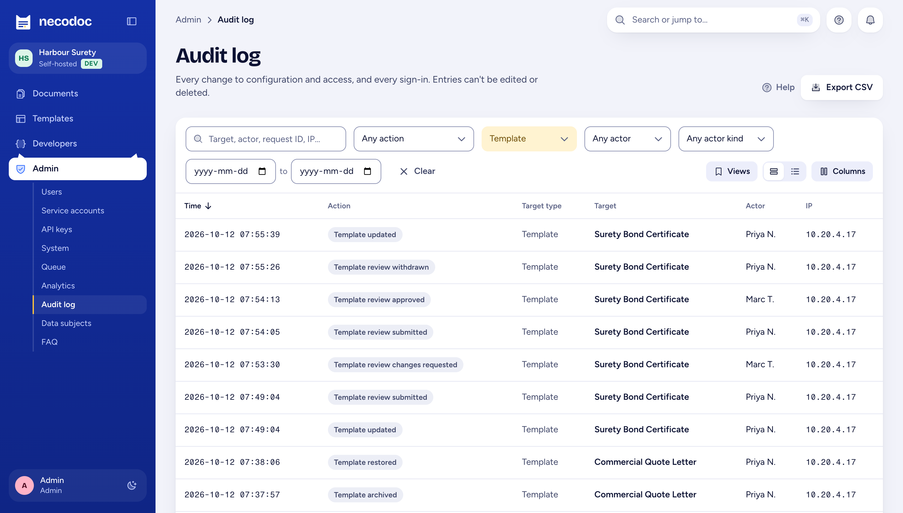
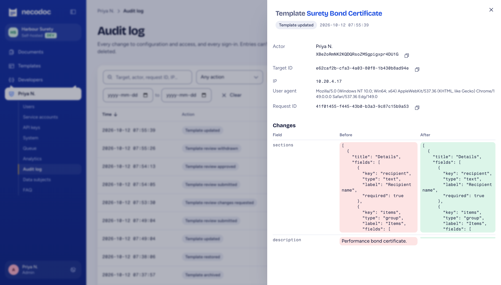
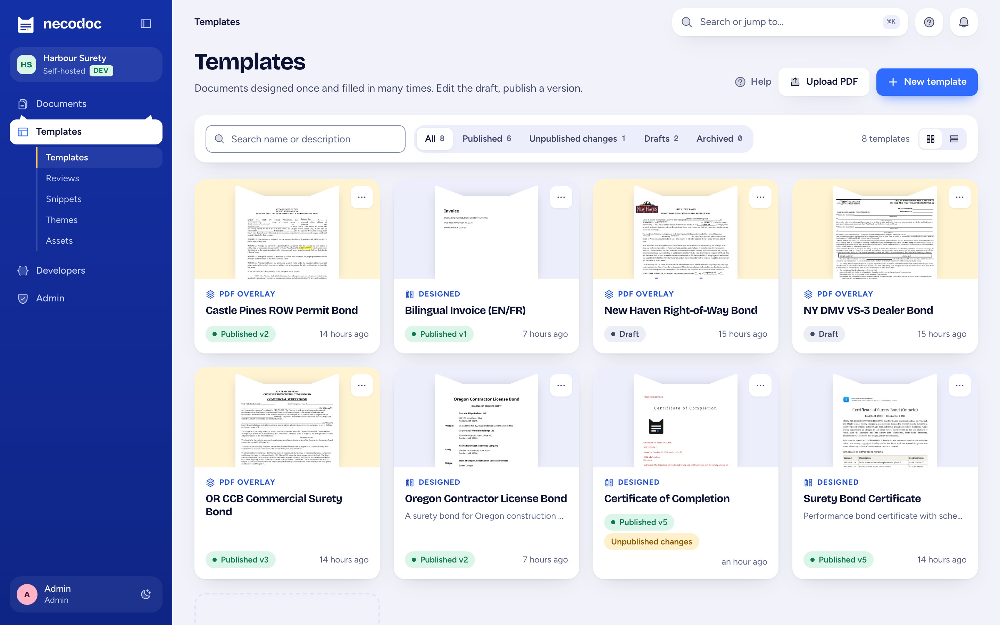

necodoc / Security and governance
Security and governance
necodoc runs in your account, signs people in through your IdP, and writes its records to your Postgres. This page lists the controls it provides, how each works, and where each one stops.
ANTHROPIC_KEY, the template assistant sends the draft template (fields, content, sample data) and AI field detection sends page images of the uploaded form to Anthropic's API. Generation data, the policyholder data that fills real documents, isn't sent. Each AI request is in the audit log. Without the key, no request leaves your boundary except webhooks you configure. AI template assistant specControls list
Every row links to the spec that defines the control and its known limits.
| Control | How necodoc does it | Proof |
|---|---|---|
| Identity and access | ||
| Single sign-on | Entra ID, Auth0, SiteMinder or any OIDC or SAML 2.0 IdP, or a trusted SiteMinder-style header. Accounts are created on first sign-in. | Single sign-on |
| Role mapping | IdP groups map to roles: admin, publisher, reviewer, editor, viewer. Roles add up; each grants one job. | Users and roles |
| Session control | Admins ban users, revoke sessions and reset passwords. Impersonation is admin-only and audited from start to stop. | Users and roles |
| System access | ||
| Service accounts | Keys belong to a person or a service account that can never sign in. | ADR 0029 |
| Scoped keys | Scopes no wider than the owner's roles, an optional template allowlist, an IP allowlist, an expiry date, per-key rate limits, revocation and usage. | HTML to PDF API |
| Signed callbacks | Webhooks carry an HMAC-SHA256 signature over timestamp and body; retries are logged per delivery. | Webhooks |
| Data | ||
| Residency | Records in your Postgres; PDFs in your S3-compatible bucket, Azure Blob container or disk, in the region you choose. | ADR 0023 |
| Downloads | Streamed through signed, expiring links. Minting a link is audited. | Generation log |
| Retention | A retention period for the generation log and its stored PDFs, set by an admin. | Generation log |
| Audit and logging | ||
| Audit log | Every configuration and access change, sign-ins including failures, impersonation and API key use, with before and after diffs. Append-only, enforced by a database trigger. CSV export. | Audit log |
| Generation log | Every PDF with its input, output, template version, caller and a timing breakdown; re-runnable against the exact version. | Generation log |
| Operational logs | JSON logs, Prometheus metrics, OpenTelemetry traces, one request id end to end. Logs and traces never carry field values. | Observability |
| Change control and output | ||
| Versioning | One working draft; published versions are numbered and immutable. Publishing is its own permission. | Publishing |
| Review gate | When required, only an approved, unchanged draft can be published. | Review |
| Regression tests | Named test cases with assertions; page-by-page visual and text diff against the published version. | Test cases |
| Output integrity | PDF/A-2b or 2u, PDF/UA-1, PAdES B-B or B-T certification with your certificate. Each generation records what was applied. | Archival output |
| Privacy and vendor risk | ||
| Sensitive fields | Fields marked sensitive are masked in audit diffs and in other people's log entries. | Personal data |
| Erasure | Find everything stored about a data subject and erase it, with an erasure report. | Personal data |
| Exit | MIT source, standard Postgres, PDFs in your storage, templates as data. No vendor holds your data. | Open source |
Audit and logging
The audit log records the change and its diff. The generation log records every PDF that came out of it. Together they answer the auditor's question without a spreadsheet.


A trigger rejects updates and deletes on audit rows, so the app, an API key or a bug can't rewrite history.
There is no hash chain, and a DBA can disable the trigger. Ship the log to your SIEM if you need proof against your own administrators.
Change control
Editors change content. Fields are the contract your systems code against, published as a JSON Schema per version. Review and publish are separate permissions.

Output integrity
PDF/A-2b or 2u for retention, tagged PDF/UA-1 for screen readers, and PAdES certification a recipient can check against an edited copy. Never applied to a file that can't honestly carry it.
Archival output →Privacy
Sensitive fields are masked in diffs and other people's log entries. Admins find and erase a data subject's records, with a report for the request.
Personal data →Signatures
Signing packages list signers, routing order and box positions as envelope JSON. Your provider runs the legally binding signing.
Signing packages →| Requirement | How necodoc helps | Still yours |
|---|---|---|
| OSFI B-10 third-party risk | Self-hosted MIT software: audit and access rights are yours, the exit plan is your own Postgres and bucket. | Your third-party assessment and exit testing |
| OSFI B-13 technology and cyber | Runs inside your controls: your IdP, network, keys, logging and patch cycle. | Operating and patching it |
| Bill 96 Québec, French first | English and fr-CA from one template, so the French copy can't drift from the English. | Translation quality and legal review |
| Law 25 · PIPEDA privacy | You choose the region; sensitive-field masking; erasure per data subject with a report. | Privacy assessments, retention policy |
| AODA accessible formats | Tagged PDF/UA-1 output from designed and HTML documents. | Accessible content and alt text in templates |
What we don't claim
There is no hosted service, so there is nothing for an auditor to attest. necodoc runs inside your SOC 2 and B-13 boundary and inherits your controls.
We describe controls, not attestations.
The audit log is tamper-resistant; see above.
No ESIGN, eIDAS or UECA claims. Your provider signs.
It's true with AI off, the default, and stated at the top of this page.